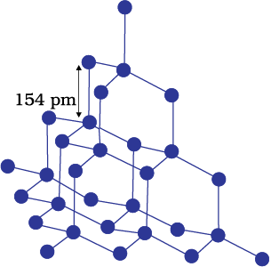
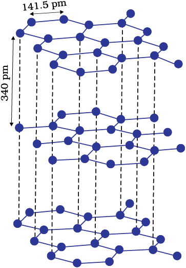

We have learnt about amorphous substances and that they have only short range order. However, most of the solid substances are crystalline in nature. For example, all the metallic elements like iron, copper and silver; non – metallic elements like sulphur, phosphorus and iodine and compounds like sodium chloride, zinc sulphide and naphthalene form crystalline solids.
Crystalline solids can be classified on the basis of nature of intermolecular forces operating in them into four categories viz., molecular, ionic, metallic and covalent solids. Let us now learn about these categories.
Molecules are the constituent particles of molecular solids. These are further sub divided into the following categories:
(i) Non polar Molecular Solids: They comprise of either atoms, for example, argon and helium or the molecules formed by non polar covalent bonds for example H2, Cl2 and I2. In these solids, the atoms or molecules are held by weak dispersion forces or London forces. These solids are soft and non-conductors of electricity. They have low melting points and are usually in liquid or gaseous state at room temperature and pressure.
(ii) Polar Molecular Solids: The molecules of substances like HCl, SO2, etc. are formed by polar covalent bonds. The molecules in such solids are held together by relatively stronger dipole-dipole interactions. These solids are soft and non-conductors of electricity. Their melting points are higher than those of non polar molecular solids yet most of these are gases or liquids under room temperature and pressure. Solid SO2 and solid NH3 are some examples of such solids.
(iii) Hydrogen Bonded Molecular Solids: The molecules of such solids contain polar covalent bonds between H and F, O or N atoms. Strong hydrogen bonding binds molecules of such solids like H2O (ice). They are non-conductors of electricity. Generally they are volatile liquids or soft solids under room temperature and pressure.
Ions are the constituent particles of ionic solids. Such solids are formed by the three dimensional arrangements of cations and anions bound by strong coulombic (electrostatic) forces. These solids are hard and brittle in nature. They have high melting and boiling points. Since the ions are not free to move about, they are electrical insulators in the solid state. However, in the molten state or when dissolved in water, the ions become free to move about and they conduct electricity.
Metals are orderly collection of positive ions surrounded by and held together by a sea of free electrons. These electrons are mobile and are evenly spread out throughout the crystal. Each metal atom contributes one or more electrons towards this sea of mobile electrons. These free and mobile electrons are responsible for high electrical and thermal conductivity of metals. When an electric field is applied, these electrons flow through the network of positive ions. Similarly, when heat is supplied to one portion of a metal, the thermal energy is uniformly spread throughout by free electrons. Another important characteristic of metals is their lustre and colour in certain cases. This is also due to the presence of free electrons in them. Metals are highly malleable and ductile.
A wide variety of crystalline solids of non-metals result from the formation of covalent bonds between adjacent atoms throughout the crystal. They are also called giant molecules. Covalent bonds are strong and directional in nature, therefore atoms are held very strongly at their positions. Such solids are very hard and brittle. They have extremely high melting points and may even decompose before melting. They are insulators and do not conduct electricity. Diamond and silicon carbide are typical examples of such solids. Graphite is soft and a conductor of electricity. Its exceptional properties are due to its typical structure. Carbon atoms are arranged in different layers and each atom is covalently bonded to three of its neighbouring atoms in the same layer. The fourth valence electron of each atom is present between different layers and is free to move about. These free electrons make graphite a good conductor of electricity. Different layers can slide one over the other. This makes graphite a soft solid and a good solid lubricant.

Network structure and Structure of graphite of diamond
Horizontally scrollable table
| Type of Solid | Constituent Praticles |
Bonding/Attractive Forces |
Examples | Physical Nature | Electrical Conductivity | Melting Point |
|
Molecular solids
(ii) Polar (iii) Hydrogen Bonded |
Molecules |
Dispersion or London forces Dipole-dipole interactions Hydrogen bonding |
Ar, CCl4, H2, I2, CO HCl, SO2 H2O (ice) |
Soft Soft Hard |
Insulator Insulator Insulator |
Very Low Low Low |
| Ionic solids | Ions | Coulombic or electrostatic |
NaCl, MgO, ZnS, CaF2 |
Hard but Brittle | Insulators in Solid state but conductors in molten state and in aqueous solutions | High |
| Metallic solids | Positive Ions in a sea of delocalised electrons | Metalic Binding | Fe, Cu, Ag | Hard but malleable | Conductors in solid state as well as in molten state | Fairly high |
| Covalent or network solids | Atoms | Covalent bonding | SiO2 (quartz), SiC, C (diamond), AlN, C graphite) |
Hard Soft |
Insulators Conductor(exception) |
Very high |